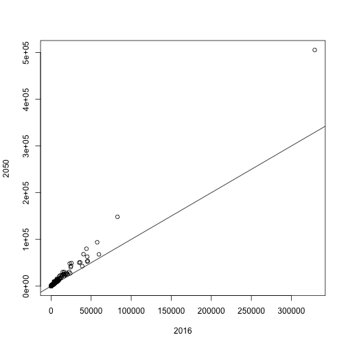
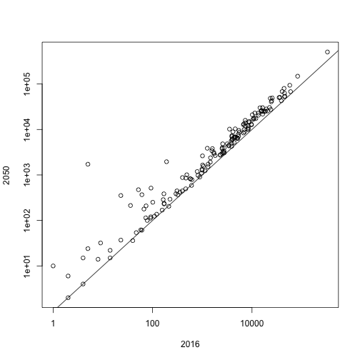
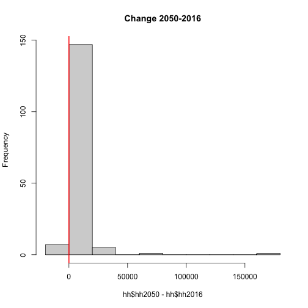
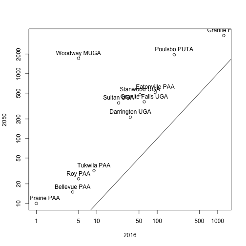

R Fundamentals I
Data manipulation and simple plots
Learning Objectives
- To be able to summarize and visualize data.
Data manipulation
Let’s try vectorisation on the hh2050 column of the hh dataset. Make a new column in the hh data frame that contains households in units of thousands of people.
city_id hh2016 hh2020 hh2030 hh2040 hh2050 city_name county_id county
1 1 2705 2735 2836 2939 3037 Normandy Park 33 King
2 2 24886 26527 32059 37708 43071 Auburn 33 King
3 3 45021 45724 48094 50515 52813 King-Rural 33 King
4 4 10135 11122 14449 17846 21072 SeaTac 33 King
5 5 22527 23240 25643 28097 30427 Shoreline 33 King
6 6 16769 17481 19881 22332 24658 Renton PAA 33 King
hh50inT
1 3.037
2 43.071
3 52.813
4 21.072
5 30.427
6 24.658
Create a log transformation:
city_id hh2016 hh2020 hh2030 hh2040 hh2050 city_name county_id
1 1 7.902857 7.913887 7.95015 7.985825 3037 Normandy Park 33
2 2 10.122061 10.185918 10.37533 10.537628 43071 Auburn 33
3 3 10.714884 10.730379 10.78091 10.830026 52813 King-Rural 33
4 4 9.223750 9.316680 9.57838 9.789535 21072 SeaTac 33
5 5 10.022470 10.053630 10.15203 10.243418 30427 Shoreline 33
6 6 9.727287 9.768870 9.89752 10.013776 24658 Renton PAA 33
county hh50inT
1 King 3.037
2 King 43.071
3 King 52.813
4 King 21.072
5 King 30.427
6 King 24.658
Create a dataset of differences:
city_id city_name county_id county hh2020 hh2030 hh2040
1 1 Normandy Park 33 King 30 101 103
2 2 Auburn 33 King 1641 5532 5649
3 3 King-Rural 33 King 703 2370 2421
4 4 SeaTac 33 King 987 3327 3397
5 5 Shoreline 33 King 713 2403 2454
6 6 Renton PAA 33 King 712 2400 2451
city_id city_name county_id county
Min. : 1.00 Length:161 Min. :33.00 Length:161
1st Qu.: 41.00 Class :character 1st Qu.:33.00 Class :character
Median : 82.00 Mode :character Median :53.00 Mode :character
Mean : 82.79 Mean :46.98
3rd Qu.:122.00 3rd Qu.:61.00
Max. :173.00 Max. :61.00
hh2020 hh2030 hh2040
Min. : -2.0 Min. : -6 Min. : -5
1st Qu.: 13.0 1st Qu.: 46 1st Qu.: 46
Median : 116.0 Median : 393 Median : 400
Mean : 469.8 Mean : 1583 Mean : 1617
3rd Qu.: 488.0 3rd Qu.: 1643 3rd Qu.: 1678
Max. :15914.0 Max. :53635 Max. :54773
Scatter plot and histogram
Plot results:

Warning in xy.coords(x, y, xlabel, ylabel, log): 1 x value <= 0 omitted from
logarithmic plot
Warning in xy.coords(x, y, xlabel, ylabel, log): 1 y value <= 0 omitted from
logarithmic plot


Investigate records more than 200% increase from 2016 to 2050:
[1] 12 10
plot(lrg$hh2016, lrg$hh2050, xlab = "2016", ylab = "2050", log = "xy")
text(lrg$hh2016, lrg$hh2050, labels = lrg$city_name, pos = 3)
abline(0,1)